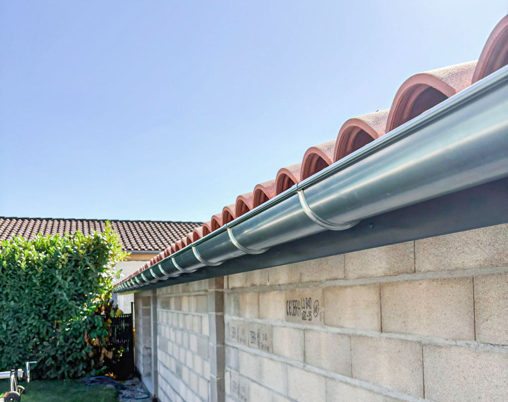

Service Zinguerie

Nos services de zinguerie comprennent la pose et la réparation des éléments métalliques indispensables à l’étanchéité de votre toiture, comme les chéneaux, solins, rives, et descentes d’eau pluviale.
Nos prestations spécifiques :
- Pose et réparation de chéneaux : Installation et entretien pour une évacuation optimale des eaux.
- Entourages de cheminée : Étanchéité et protection contre les infiltrations.
- Réalisation de noues et rives métalliques : Adaptées à la configuration de votre toiture.
- Pose de descentes d’eau pluviale : Installation durable et fiable pour éviter les dégâts des eaux.
Demander un devis